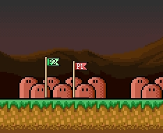

This is the points, what defining start position of playable character on this level. Every you start play level, playable character will be placed in this point.
For place the player point, you need select one of
toolbar button
 or
or
 ,
where red - for 1st player and green - for 2nd.
,
where red - for 1st player and green - for 2nd.
In the editor start points will be displayed as flags:

If points will not be defined, level will be automatically end, because it haven't available playable characters on level. Also you can use doors as player's start point, but you need define the array index of this door in the world map or in other level.
Copyright © 2014-2015 Platformer Game Engine by Wohlstand project. All rights reserved.